Adversarial Defense at Inference
By LI Haoyang 2020.11.12
Content
Adversarial Defense at InferenceContentPurificationPixelDefend - ICLR 2018Pixel CNNDistribution of adversarial examplesPurifying images with PixelDefendExperimentsInspirationsMixup InferenceMixup Inference - ICLR 2020Mixup Inference defenseTheoretical analysisMI with predicted label (MI-PL)MI with other labels (MI-OL)ExperimentsInspirations
Purification
PixelDefend - ICLR 2018
This defense is breached in Obfuscated Gradients Give a False Sense of Security - ICML 2018.
Yang Song, Taesup Kim, Sebastian Nowozin, Stefano Ermon, Nate Kushman. PixelDefend: Leveraging Generative Models to Understand and Defend against Adversarial Examples. ICLR 2018. arXiv:1710.10766
In this paper, we show empirically that adversarial examples mainly lie in the low probability regions of the training distribution, regardless of attack types and targeted models.
They argue that adversarial examples lie in the low probability region of the generating distribution of datasets, therefore they fool the classifiers mainly due to covariate shift.
This is analogous to training models on MNIST (LeCun et al., 1998) but testing them on Street View House Numbers (Netzer et al., 2011).
Pixel CNN
The PixelCNN (van den Oord et al., 2016b; Salimans et al., 2017) is a generative model with tractable likelihood especially designed for images.
It defines the joint distribution over all pixels by factorizing it into a product of conditional distributions, i.e.
The pixel dependencies are in raster scan order (i.e. row by row and column by column with each row).
It views an image as a vector of pixels and predicts the next pixel with the previous pixel sequentially.
For an image of resolution $I\times J$ and $K$ channels, its bits per dimension is defined as
Distribution of adversarial examples
The transferability of adversarial examples indicate that there are some intrinsic properties of adversarial examples which are classfier-agnostic.
One possibility is that, compared to normal training and test images, adversarial examples have much lower probability densities under the image distribution.
As a result, classifiers do not have enough training instances to get familiarized with this part of the input space.
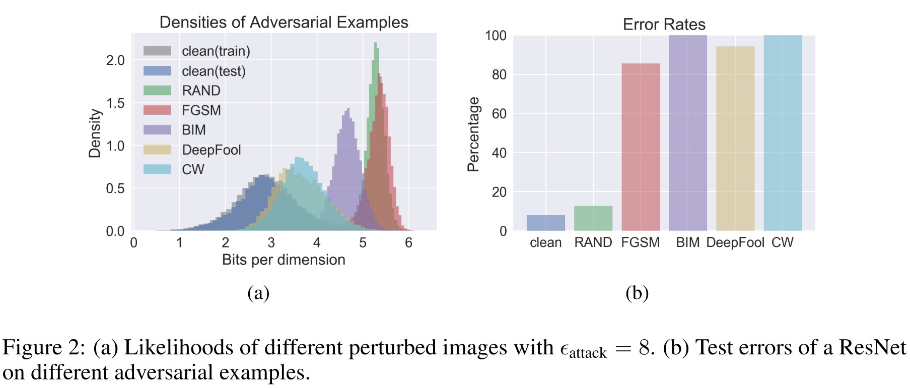
They train a PixelCNN on CIFAR-10 and use its log-likelihood as an approximation to the true underlying probability density. They also generate a bunch of adversarial examples respect to ResNet.
As shown in Figure 2, the distribution of log-likelihoods show considerable difference between perturbed images and clean images. As for the random noise that also shift the distribution of original data (but not adversarial), they explain that
We believe this is due to an inductive bias that is shared by many neural network models but not inherent to all models, as discussed further in Appendix A

The $p$-value is a statistical indicator calculated from PixelCNN model, for clean images, it should follow a uniform distribution. As shown in Figure 3, there are clear differences between the uniform distribution and the distributions of adversarial examples.
Purifying images with PixelDefend
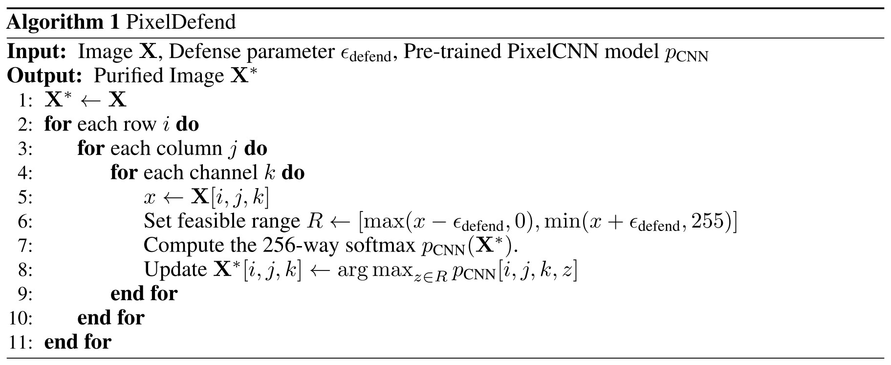
The purification is intended to move the adversarial examples back towards the training distribution.
The problem is to find an image $\bold{X}^*$ that maximizes the probability that it comes from the training distribution $p(\bold{X})$ subject to the constraint that $\bold{X}^*$ is within the $\epsilon_{defend}$-ball of adversarial example $\bold{X}$, i.e.
The $\epsilon_{defend}$-ball is designed to ensure the process does not change the semantic meaning. In practice, $p(\bold{X})$ is approximated using the $p_{CNN}(\bold{X})$ from the trained PixelCNN.
They test L-BFGS-B and a greedy technique (as in Algorithm 1) to solve this problem.
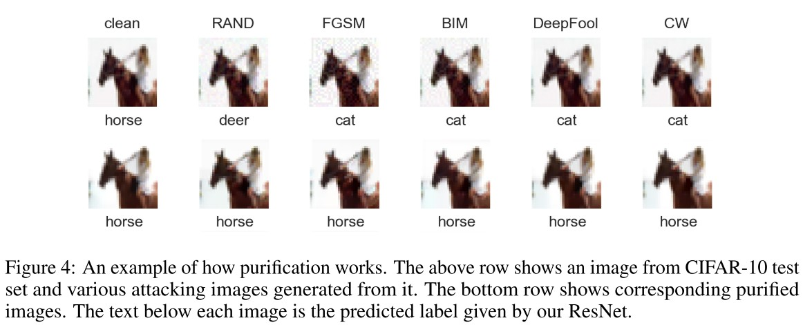
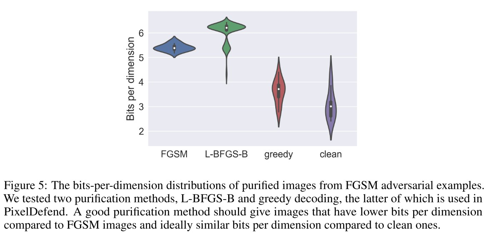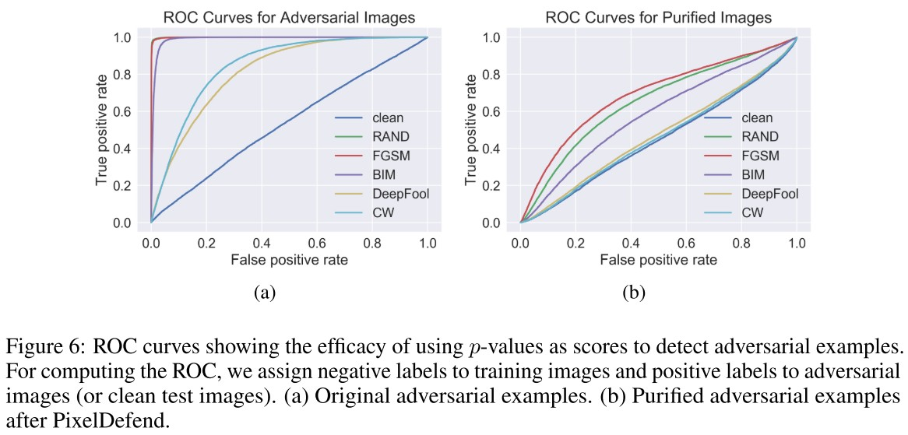
As shown above, PixelDefend can effectively purify the adversarial examples.
As for the effects of PixelDefend on clean images, they adopt an adaptive threshold $\epsilon_{defend}$ to deal with this problem.
They argue that the ability to attack end-to-end with PixelDefend is limited (although disputable).
Experiments
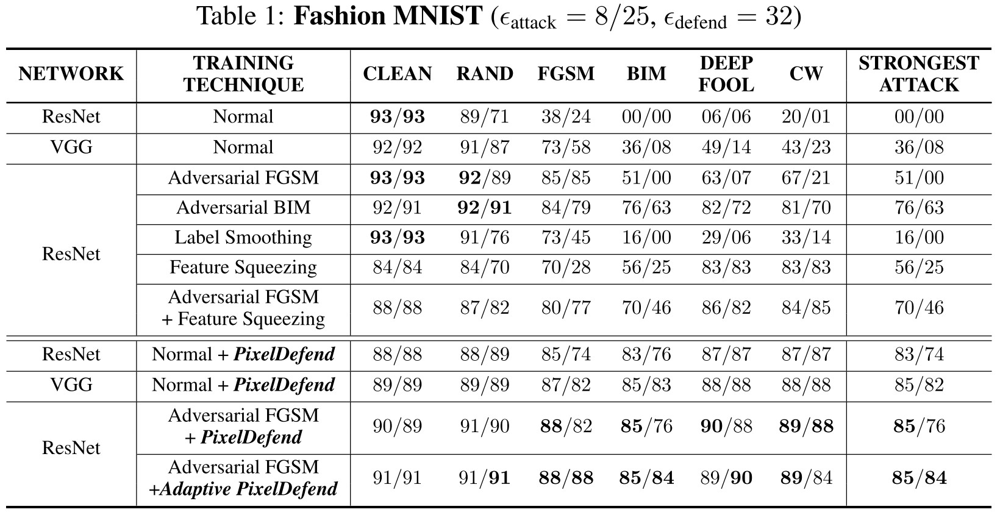
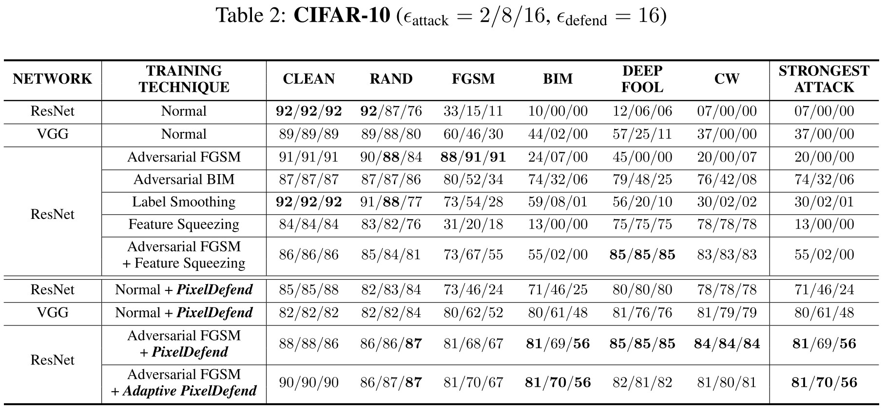
Inspirations
The idea of purifying adversarial example is very ideal and if it was not breached and classified as gradient masking.
I think this road is still possible, perhaps combining adversarial training with purification of adversarial examples.
Mixup Inference
Mixup Inference - ICLR 2020
Code: https://github.com/P2333/Mixup-Inference
Paper: https://openreview.net/forum?id=ByxtC2VtPB
Tianyu Pang, Kun Xu, Jun Zhu. Mixup Inference: Better Exploiting Mixup to Defend Adversarial Attacks. ICLR 2020.
Namely, since the locality of the adversarial perturbations, it would be more efficient to actively break the locality via the globality of the model predictions.
MI mixups the input with other random clean samples, which can shrink and transfer the equivalent perturbation if the input is adversarial.
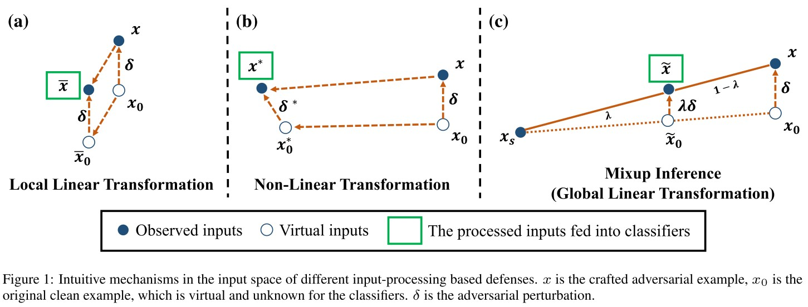
As shown in Figure 1(c), mixup inference introduces pertubation shrinkage and input transfer to the potentially perturbed examples.
The basic idea of mixup inference (MI) is very simple, the final input of the model is a mixup of the provided (potentially adversarial) input $x$ and a sampled clean example $x_s$, i.e. $\tilde{x}=\lambda x+(1-\lambda)x_s$.
Mixup Inference defense
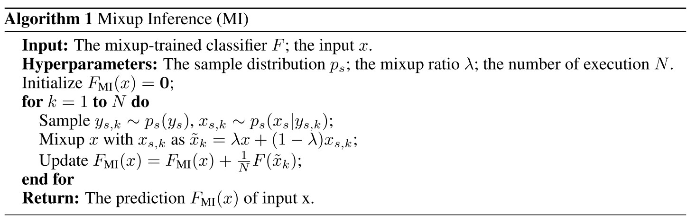
An iteration of MI operations is as follows:
- Sample a label $y_s\sim p_s(y)$.
- Sample $x_s$ from $p_s(x|y_s)$.
- Mix it up with $x$, i.e. $\tilde{x}=\lambda x+(1-\lambda)x_s$.
- Update $F_{MI}(x)$.
They actually construct a new statistical model based on the original model.
Theoretical analysis
Given $z$ defined as
and a clean example $x_0$ from the data manifold $p(x)$. A general example can be denoted as
Based on the assumption that adversarial examples are off the data manifolds, they assume $x_0+\delta\notin \text{supp}(p(x))$.
Suppose $H(x_i)$ predict the one-hot vector of label $y_i$, i.e. $H_y(x_i)=\bold{1}_{y=y_i}$.
If the input $x_0+\delta$ is adversarial, then there should be an extra non-linear part $G(\delta;x_0)$ of $F$, assuming that $x$ is off the data manifolds.
Thus for a general input $x$, the prediction vector is
The output of the mixup $\tilde{x}$ in MI is then
assuming that $H$ is a linear function on the combination of clean images.
The output $F_{MI}(x)$ in Algorithm 1 is a Monte Carlo approximation of $\Bbb{E}_{p_s}[F(\tilde{x})]$, i.e.
To statistically make sure that the clean inputs will be correctly classified after MI-OL, there should be $\forall k\in[L]\backslash \{y\}$.
The $y$-th components of $F(\cdot)$ are
Given $\hat{y}=F(x)$, the $\hat{y}$-th components of $F(\cdot)$ are
since $\bold{1}_{y=\hat{y}}=\bold{1}_{z=0}$.
Consider the following scenarios:
MI with predicted label (MI-PL)
The sampling label $y_s$ is the same as predicted label $\hat{y}$, i.e. $p_s(y)=\bold{1}_{y=y_s}$.
MI with other labels (MI-OL)
The sampling label $y_s$ is uniformly sampled from the labels other than $\tilde{y}$, i.e. $p_s(y)=\mathcal{U}_{\tilde{y}}(y)$, a discrete uniform distribution on the set $\{y\in[L]|y\neq \hat{y}\}$.
The resulting output is shown below.
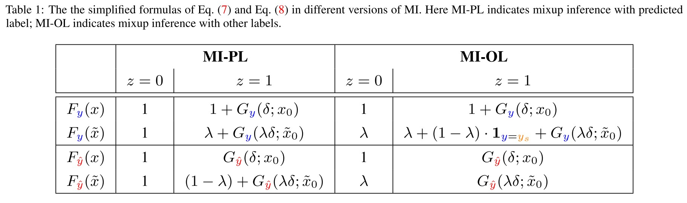
Consider the difference:
They claim that the MI method improves the robustness if the prediction value on the true label $y$ increases while it on the adversarial label $\hat{y}$ decreases after performing MI when the input is adversarial (i.e. $z=1$).
Named as robustness improving condition (RIC) and formally denoted as
They also define a detection gap (DG), denoted as
A higher value of DG indicates that $\Delta F_{\hat{y}}(x;p_s)$ is better as a detection metric.
MI with predicted label (MI-PL)
If MI-PL can improve the general-purpose robustness, it should satisfy RIC, according to Table 1, it means that
The upper notion can be decomposed into
Indicating the two mechanisms of MI.
And the detection gap is
MI with other labels (MI-OL)
Since $\Bbb{E}(\bold{1}_{y=y_s})=\frac{1}{L-1}$, similarly, there should exist
And the detection gap is
And there exists $\Bbb{DG}_{MI-PL}=\Bbb{DG}_{MI-OL}$.
However, in practice we find that MI-PL performs better than MI-OL in detection, since empirically mixup-trained models cannot induce ideal global linearity.
They verified the conditions that should be satisfied as shown in Figure 2.
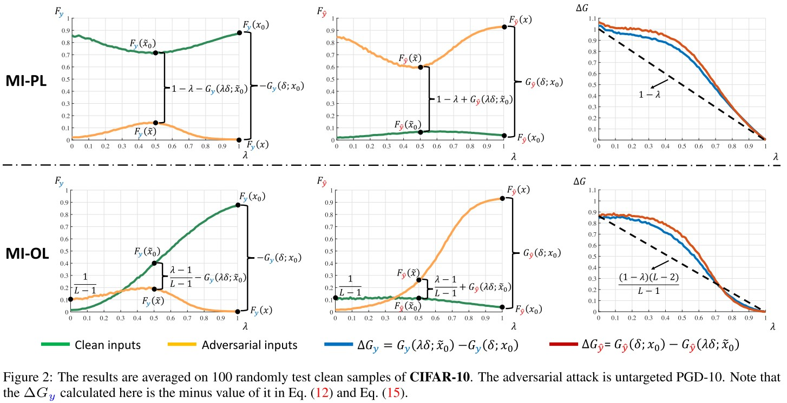
Experiments
In training, we use ResNet-50 (He et al., 2016) and apply the momentum SGD optimizer (Qian, 1999) on both CIFAR-10 and CIFAR-100
The attack method for AT and interpolated AT is untargeted PGD-10 with $\epsilon=8/255$ and step size 2/255 (Madry et al., 2018), and the ratio of the clean examples and the adversarial ones in each mini-batch is 1 : 1 (Lamb et al., 2019).
Notations:
ERM
Empirical Risk Minimization, the standard training
Mixup (Mixup training)
It minimizes$\frac{1}{m}\sum_{j=1}^m\mathcal{L}(F(\tilde{x}_j),\tilde{y}_j)$, where $\tilde{x}_j=\lambda x_{j0}+(1-\lambda)x_{j1}$, $\tilde{y}_{j}=\lambda y_{j0}+(1-\lambda)y_{j1}$.
Interpolated AT
Interpolated Adversarial Training
As a practical strategy, we also evaluate a variant of MI, called MI-Combined, which applies MI-OL if the input is detected as adversarial by MI-PL with a default detection threshold; otherwise returns the prediction on the original input.
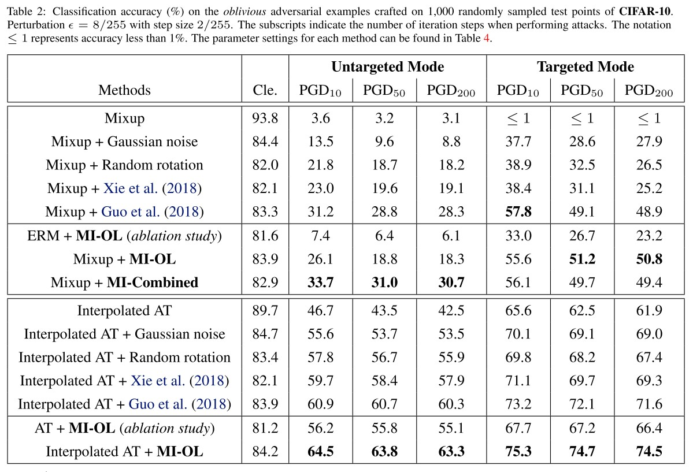
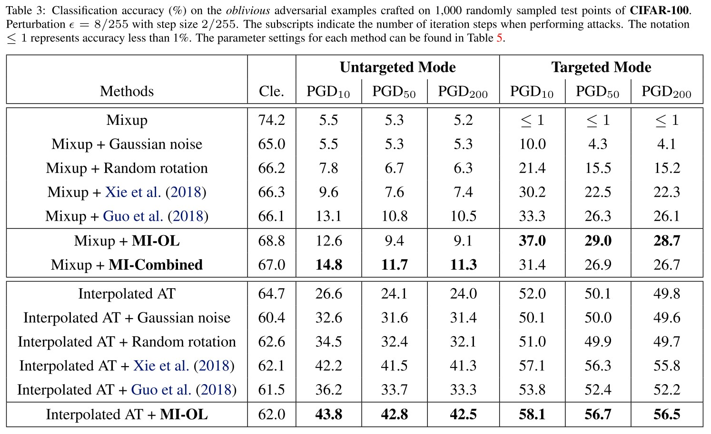
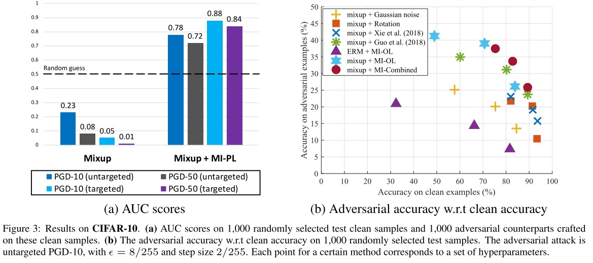
The results show that applying MI-PL in inference can better detect adversarial attacks, while directly detecting by the returned confidence without MI-PL performs even worse than a random guess.
As shown in these results, our MI method can significantly improve the robustness for the trained models with induced global linearity, and is compatible with training-phase defenses like the interpolated AT method.
It cannot work effectively independently.
They also evaluate on a customized adaptive attack.
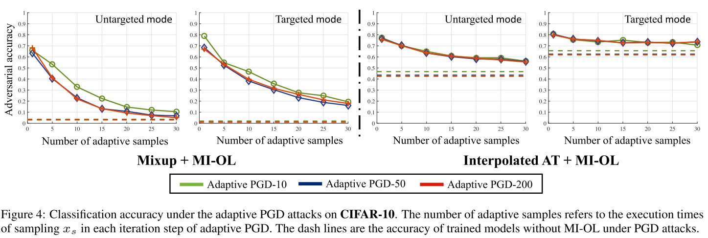
We can see that even under a strong adaptive attack, equipped with MI can still improve the robustness for the classification models.
Inspirations
This paper instantiates one of my ideas, and give a very comprehensive theoretical analysis. If the model follow the assumption that it works linearly on the combination of clean images, MI should work quite well, as demonstrated with Mixup Training and Interpolate AT.
The assumption is too strong, since most of the common classifiers do not function linearly between instances.
But it gives another inspiration, if the $x_s$ is very close to the clean image itself, the perturbation shrinkage will be very large, potentially fix the misclassification.